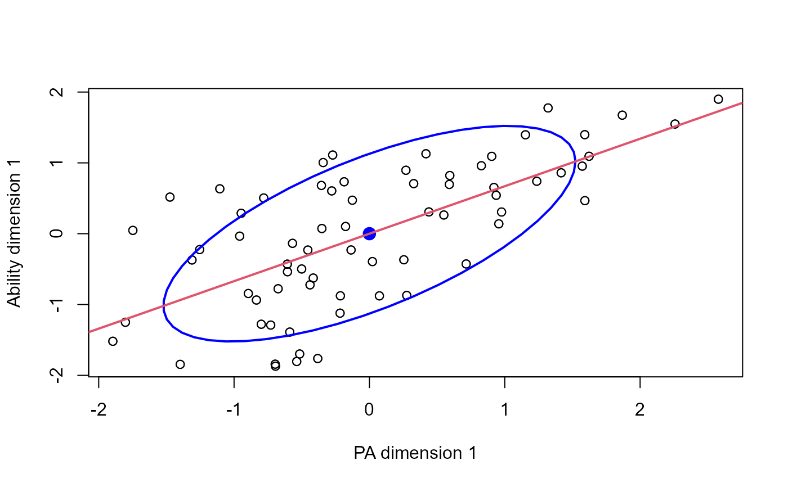
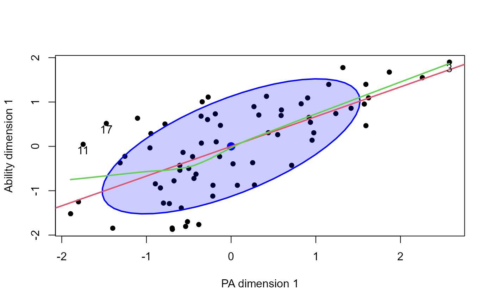
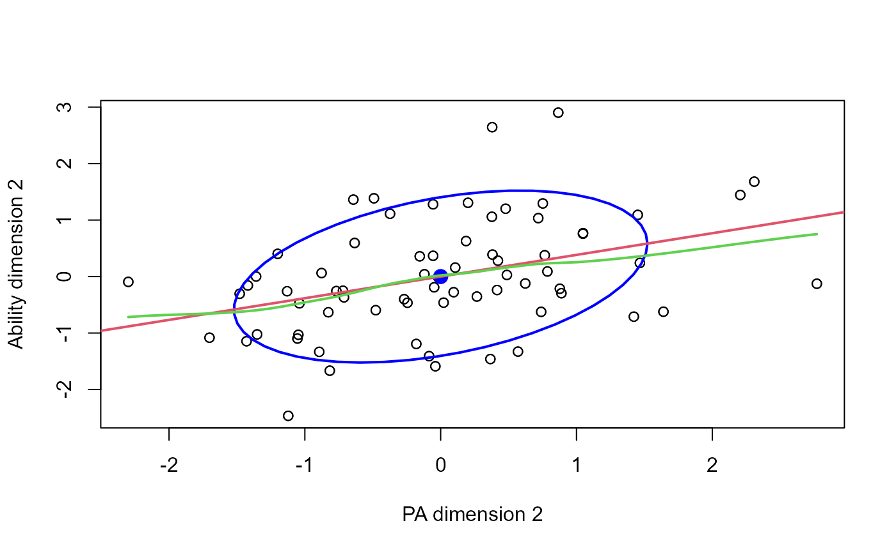
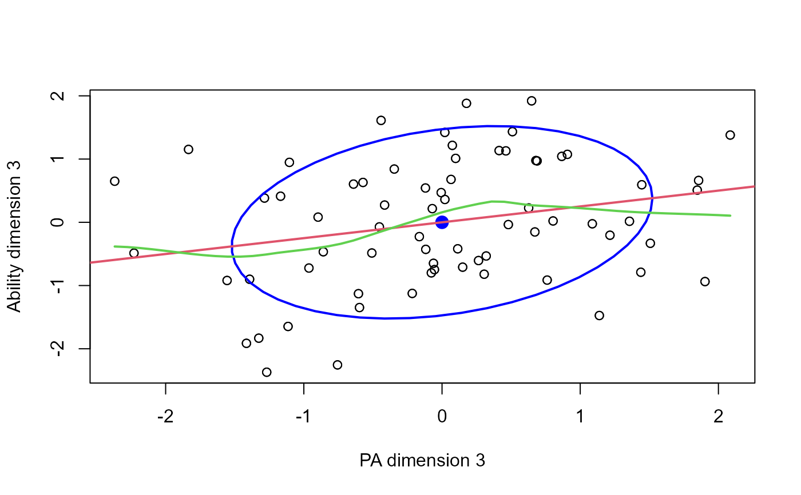
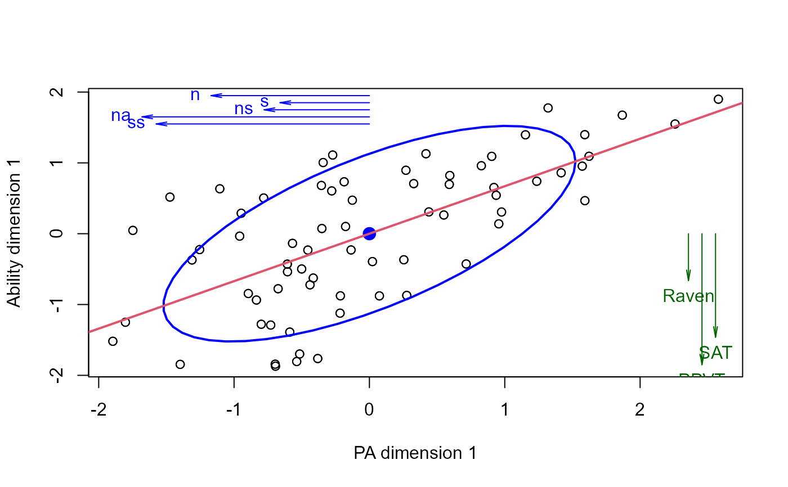

This function produces plots to help visualize X, Y data in canonical space.
The present implementation plots the canonical scores for the Y variables against those for the X variables on given dimensions. We treat this as a view of the data in canonical space, and so offer additional annotations to a standard scatterplot.
Canonical correlation analysis assumes that the all correlations between the X and Y variables can be expressed in terms of correlations the canonical variate pairs, (Xcan1, Ycan1), (Xcan2, Ycan2), ..., and that the relations between these pairs are indeed linear.
Data ellipses, and smoothed (loess) curves, together with the linear regression line for each canonical dimension help to assess whether there are peculiarities in the data that might threaten the validity of CCA. Point identification methods can be useful to determine influential cases.
Usage
# S3 method for class 'cancor'
plot(
x,
which = 1,
xlim,
ylim,
xlab,
ylab,
points = TRUE,
add = FALSE,
col = palette()[1],
ellipse = TRUE,
ellipse.args = list(),
smooth = FALSE,
smoother.args = list(),
col.smooth = palette()[3],
abline = TRUE,
col.lines = palette()[2],
lwd = 2,
labels = rownames(xy),
id.method = "mahal",
id.n = 0,
id.cex = 1,
id.col = palette()[1],
...
)Arguments
- x
A
"cancor"object- which
Which dimension to plot? An integer in
1:x$ndim.- xlim, ylim
Limits for x and y axes
- xlab, ylab
Labels for x and y axes. If not specified, these are constructed from the
set.namescomponent ofx.- points
logical. Display the points?
- add
logical. Add to an existing plot?
- col
Color for points.
- ellipse
logical. Draw a data ellipse for the canonical scores?
- ellipse.args
A list of arguments passed to
dataEllipse. Internally, the function sets the default value forlevelsto 0.68.- smooth
logical. Draw a (loess) smoothed curve?
- smoother.args
Arguments passed to
loessLine, which should be consulted for details and defaults.- col.smooth
Color for the smoothed curve.
- abline
logical. Draw the linear regression line for
Ycan[, which]onXcan[, which]?- col.lines
Color for the linear regression line
- lwd
Line widths
- labels
Point labels for point identification via the
id.methodargument.- id.method
Method used to identify individual points. See
showLabelsfor details. The default,id.method = "mahal"identifies theid.npoints furthest from the centroid.- id.n
Number of points to identify
- id.cex, id.col
Character size and color for labeled points
- ...
Other arguments passed down to
plot(...)andpoints(...)
References
Mardia, K. V., Kent, J. T. and Bibby, J. M. (1979). Multivariate Analysis. London: Academic Press.
Examples
data(Rohwer, package="heplots")
X <- as.matrix(Rohwer[,6:10]) # the PA tests
Y <- as.matrix(Rohwer[,3:5]) # the aptitude/ability variables
cc <- cancor(X, Y, set.names=c("PA", "Ability"))
plot(cc)

# exercise some options
plot(cc, which=1,
smooth=TRUE,
pch = 16,
id.n=3, ellipse.args=list(fill=TRUE, fill.alpha = 0.2))

plot(cc, which=2, smooth=TRUE)

plot(cc, which=3, smooth=TRUE)

# plot vectors showing structure correlations of Xcan and Ycan with their own variables
plot(cc)
struc <- cc$structure
Xstruc <- struc$X.xscores[,1]
Ystruc <- struc$Y.yscores[,1]
scale <- 2
# place vectors in the margins of the plot
usr <- matrix(par("usr"), nrow=2, dimnames=list(c("min", "max"), c("x", "y")))
ypos <- usr[2,2] - (1:5)/10
arrows(0, ypos, scale*Xstruc, ypos, angle=10, len=0.1, col="blue")
text(scale*Xstruc, ypos, names(Xstruc), pos=2, col="blue")
xpos <- usr[2,1] - ( 1 + 1:3)/10
arrows(xpos, 0, xpos, scale*Ystruc, angle=10, len=0.1, col="darkgreen")
text(xpos, scale*Ystruc, names(Ystruc), pos=1, col="darkgreen")
